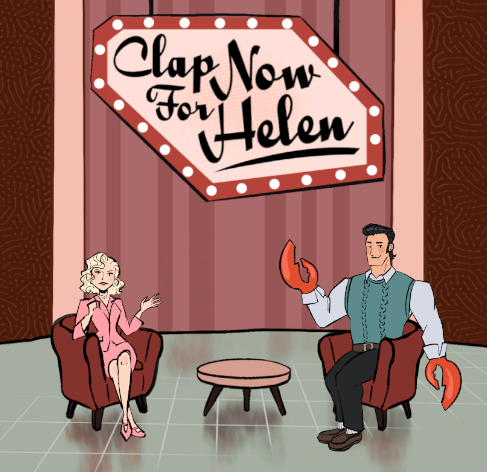

Kaitlyn Self:
My Work

 LinkedIn
LinkedIn Email
Email Phone
PhoneMost of my works here are affiliated with my academics, as I did not use GitHub for solo projects. However, I intend to record most all works on this account in the future.
Pinned Projects
Adroit Game Jam 2025 Submission: Clap Now for Helen

For my second year participating in Adroit's Game Jam through Mizzou, the
theme for the year was "emotion." After thinking long and hard about how to not make "Inside Out, The Game," we settled on having
the player act as the prompter/sound guy behind acclaimed talk show "Clap Now for Helen!"
There were a lot of very fun and impressive submissions to the game jam this year! We did not get to make
ours as technically engaging as we'd initially hoped, but I still really love the concept and world that we came up with.